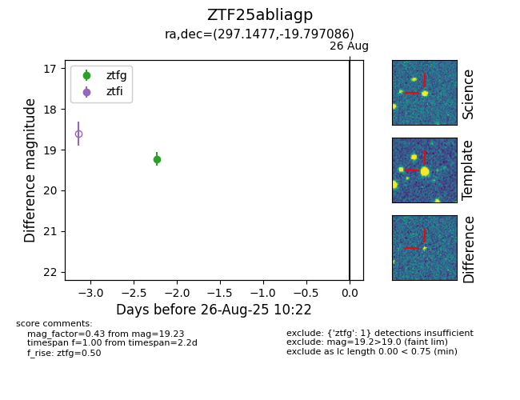

FINK: ZTF25abliagp
Lasair: ZTF25abliagp
ALeRCE: ZTF25abliagp
ZTF25abliagp (ztf,fink)
equatorial (ra, dec) = (297.1477,-19.79709)
galactic (l, b) = (20.8275,-21.16807)

last ztfg=19.23
1 ztfg detections